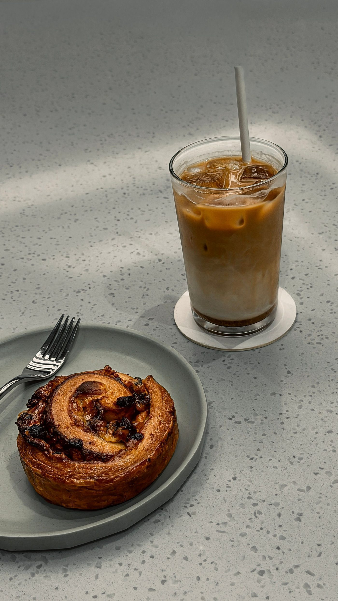
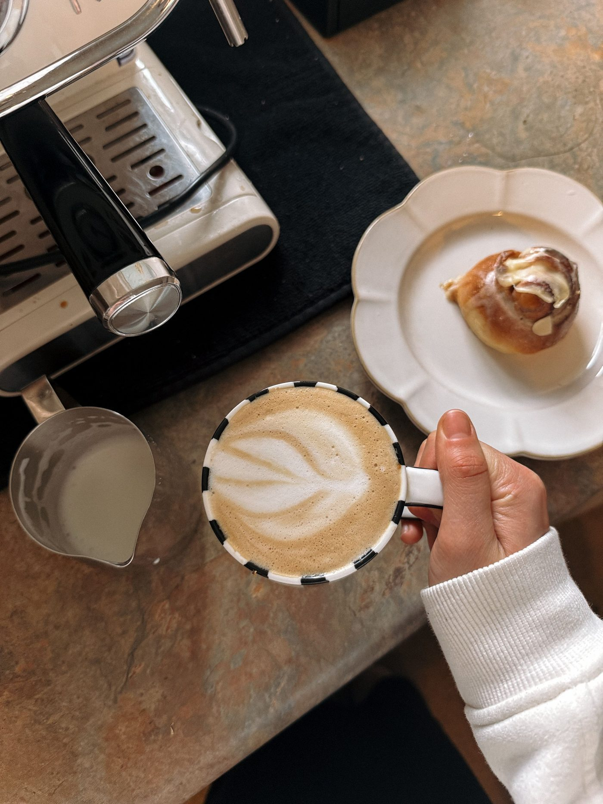

At the counter, in stock photos


Westside, Kansas City, Missouri
Goat Hill Coffee and Soda is an artisanal coffee and soda shop in Kansas City’s Westside. Call to ask about coffee drinks, house-made sodas, matcha and hojicha teas, a vegan breakfast burrito, or baked goods.

Goat Hill Coffee and Soda is an artisanal coffee and soda shop in Kansas City’s Westside. Its offerings include artisanal coffee drinks, house-made sodas in flavors like blood orange cream, cardamom, chai cider, espresso, and pomegranate sage, matcha and hojicha teas, a vegan breakfast burrito, and baked goods. The shop has outdoor seating and free Wi-Fi. The own site homepage shows only phone, hours, and a photo gallery with no menu or prices, and ordering runs only through an off-site Square link, so call with questions.

811 W 17th St, Kansas City, MO 64108
Sunday 7:00 AM to 4:00 PM; Monday to Thursday 7:00 AM to 3:00 PM; Friday and Saturday 7:00 AM to 4:00 PM